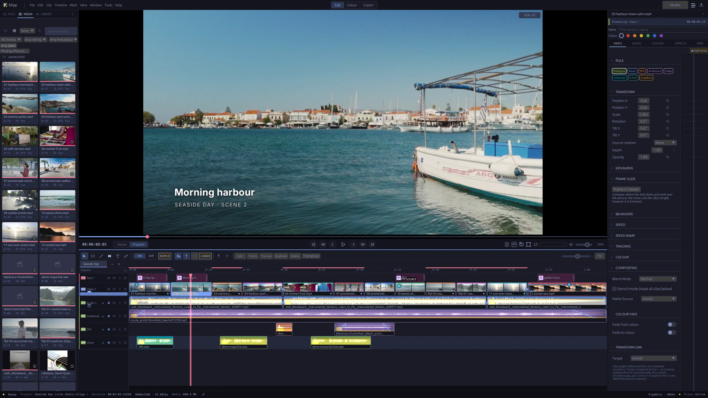
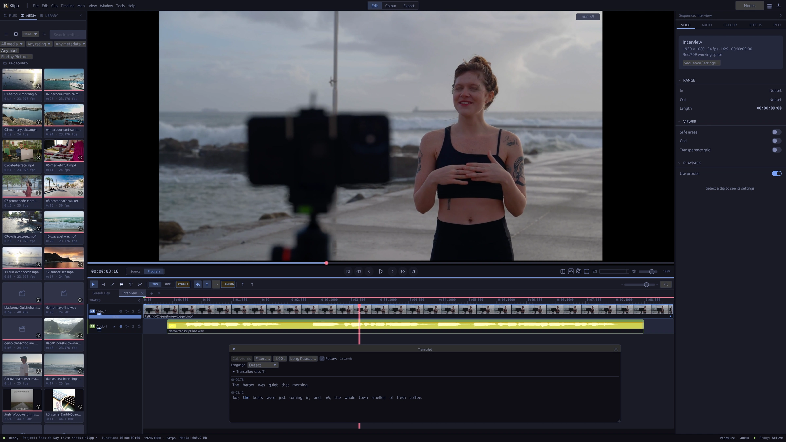
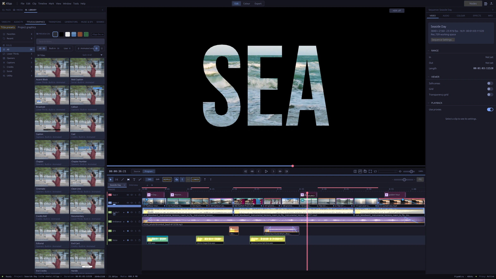
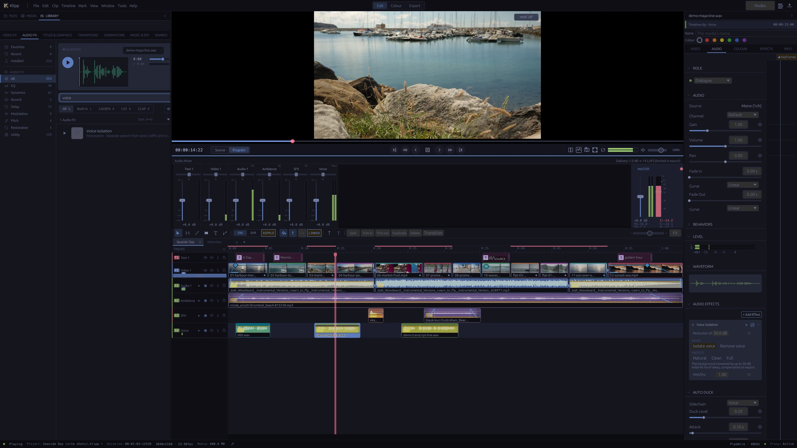

Built for Linux. In active development.
Find your cut.
Make it yours.
A native video editor with a magnetic timeline, scene-linear colour, and local AI tools. From the first assembly to the final frame.
Start with Klipp
01 / The edit
Room for the whole story.
Shape the rhythm. Keep picture, sound, and words together.
A timeline that moves with you
Build with magnetic multitrack editing, ripple trims, synced multicam, and speed ramps. Add titles and subtitles, or use the transcript to find your cut.
Sound belongs in the edit
Mix tracks, shape a voice with EQ and dynamics, and check delivery loudness. Voice isolation and dual-system sync help bring the recording into the sequence.
02 / The finish
A feel for the image.
A measure of the colour.
Work in a scene-linear pipeline (ACEScg, BT.2020 or Rec.709 linear) with camera-log decoding, node-based grades, colour wheels, curves, and GPU scopes. Finish for SDR or HDR.

03 / A helping hand
Your edit.
More ways to get there.
Transcribe, analyse, and automate.
Klipp’s built-in speech, vision, and audio models run locally. Connect an MCP-compatible assistant to inspect footage, propose an edit plan, build a sequence, and check the result.
An external assistant may use a local or cloud model, depending on your client. Local inference and external assistants are separate choices.
Read about the workflow ↗
04 / Titles
Words that move.
Start from 38 animated title templates, or build your own: complex scripts, variable fonts, 3D text, text on a path, and footage inside the letters with a track matte.

05 / Sound
Hear it in the edit.
Mix on a full mixer with loudness and true-peak meters. Clean up a voice with Voice Isolation on your own machine, duck the music under it, and deliver at your platform’s loudness.


Made in Klipp
Twenty things Klipp does.
A three-minute tour of the real interface: editing, titles, colour, sound and delivery. Cut, graded, mixed, narrated and exported in Klipp. Play with sound for the narration.
Narrated in English, with music. Shown in Klipp 0.1.0-rc.2. Footage, music and sound credits.
In full
All features.
What Klipp 0.1.0-rc.2 does, by area. Open a group to see the list.
Editing 18
- Magnetic multitrack timeline, with ripple on or off
- Insert, overwrite, replace and fit-to-fill edits from in and out marks
- Ripple, roll, slip and slide trims
- Blade, split at the playhead, lift, extract and ripple delete
- J and L cuts: trim the picture or the sound alone
- Compound clips and storylines of connected clips
- Several sequences per project, duplicated in one step
- A selects timeline for pulling takes
- Synced multicam by timecode, sound or both, cut with keys 1–9
- Speed changes, reverse, freeze frames and speed ramps
- Optical-flow slow motion
- Keyframes with a curve editor, a dope sheet and a motion path in the viewer
- Edit by transcript: delete words, filler words or long pauses
- Markers with notes, colours and kinds, including chapters
- A history window: click any step to go back
- Skimming, a source viewer and match frame
- New version at another aspect: vertical or square, reframed on the subject
- Scene detection that splits a clip at its shot changes
Media and organising 12
- Import files or whole folders, or drag them in
- Bins and rule-based smart bins
- Ratings, favourites, rejects and keywords
- Logging fields, list columns, sorting and filters
- Camera metadata from EXIF and Sony and Canon XML sidecars
- Metadata sheets in and out as CSV or ALE
- Proxies, and playback from proxies
- Relink media from a whole folder; offline files counted on open
- Find by Picture: describe a shot in words to find it (optional, runs locally)
- Video synced with separately recorded sound in the media pool
- Clips split across camera files joined as one take
- Stills, including HEIC, AVIF, JPEG XL and EXR where your FFmpeg reads them
Colour 18
- Scene-linear grading in ACEScg, BT.2020 or Rec.709 linear
- 15 camera log curves; most are detected on import from the camera
- A node graph per clip, with a picture on every node
- Colour wheels, contrast, exposure, saturation and tone controls
- RGB curves and seven hue, saturation and luminance curves
- HSL, RGB and 3D qualifiers, luma and difference keys
- Colour warper
- Circle, rectangle, gradient and Bezier masks, with tracked windows
- HDR zones for grading HDR
- 3D LUTs (.cube, .3dl, .csp) and 304 bundled film and cinematic LUTs
- ACES output transforms and a colour space transform effect
- Viewer and calibration LUTs that change only the screen
- GPU waveform, parade, vectorscope and histogram; CIE chromaticity and false colour
- Colour Check: names what is off in the frame, and the control that fixes it
- Match shots to a hero shot, or adopt a look from a reference
- Auto white balance, an eyedropper, and skin balance from detected faces
- A grade library shared across projects, with stills, wipe and before/after
- Timeline and track grades, grade versions, and grades pasted onto many clips
Effects and transitions 14
- 73 transitions, each with a live preview
- Piece transitions: strips, panels, halves and shatter
- Smooth Cut, for jump cuts between takes
- 57 built-in GPU video effects and six one-click looks
- Chroma key and luma key
- Stabilisation, rolling-shutter correction, temporal noise reduction and deflicker
- Particles, lens flare, light rays, glow, halation, VHS and old film
- Track mattes, and masks on any effect
- 13 blend modes
- Remove Background, Isolate Object and Detect Objects (optional, run locally)
- Subject tracking, and surface tracking with corner pin
- Motion blur per sequence, with shutter and samples
- Effect presets and favourites; most effect settings can be keyframed
- OFX 1.5 and frei0r video plug-ins: subsets of each format; compatibility varies by plugin
Titles and graphics 15
- 38 title templates in six categories, and templates of your own
- OpenType shaping for complex scripts and right-to-left text
- Vertical text and ruby
- Variable fonts and font fallback
- OpenType features: ligatures, small caps, figure styles, stylistic sets
- Styled runs, with copy and paste of a style
- Gradients, outlines, shadows, glow and neon
- Backings for lower thirds: a box, or shadow and outline
- Paragraphs, lists, tab stops and fit to a box
- Text on a path
- Animators by letter, word or line; staggered entrances and exits
- Extruded 3D text with bevels and lighting
- Rolling credits and crawls
- Type in the viewer with the Text tool; image layers in titles
- Find and replace across titles, and missing-font replacement
Captions and transcripts 9
- Speech transcription on your machine (optional; model downloads on request)
- A transcript panel to set the language and correct words
- Captions made from the transcript in one step
- SRT, VTT, ASS/SSA, TTML (IMSC), SCC and EBU-STL, in and out
- A subtitle editor, with a caption style per track
- Caption tracks with a language and visibility
- Caption translation on your machine, 14 language pairs (optional)
- Burnt-in or soft subtitles on export
- CEA-608 closed captions embedded in H.264 and H.265
Sound 16
- Multitrack mixer with loudness (LUFS) and true-peak meters
- Clip volume, gain, pan and channel mapping
- Audio crossfades
- 15 built-in audio effects: EQ, dynamics, restoration, reverb, delay, chorus, pitch
- Noise reduction, de-click, de-ess and hum removal
- Voice Isolation, on your machine (optional; model downloads on request)
- Normalise to a loudness or a peak, with a true-peak ceiling
- Track volume and pan automation, recorded live
- Volume keyframes and auto duck
- Sync separate sound by waveform or timecode
- Fit music to a length, in whole bars
- Audio roles, proposed by an on-device classifier
- Sound Over Time: a whole file as frequency against time
- Narration voices on your machine (optional; voices download on request)
- Voice-over recording with punch-in, and audio scrubbing
- LADSPA, LV2 and CLAP audio plug-ins: subsets of each format; compatibility varies by plugin
Delivery and interchange 15
- Export presets for the web, social, masters and broadcast; save your own
- H.264, H.265, AV1, VP9, ProRes, DNxHD and animated GIF
- MP4, MKV, MOV and WebM, in 8-bit or 10-bit
- HDR export in HLG or PQ, with HDR10+ metadata for H.265 PQ
- Output transforms for Rec.709, Rec.2020, PQ, DCI-P3 and sRGB
- Hardware encoding (NVENC, AMF, VAAPI) when your FFmpeg has it, with software fallback
- A render queue, and one file per marker range
- Loudness targets on export
- Audio-only export as MP3, WAV or M4A
- Chapters from markers, written into MP4, MKV and MOV
- A delivery check of picture and sound, and advice when 8-bit will band
- Review copies with burnt-in timecode; comments come back as markers
- Edit exchange: OTIO, FCPXML, CMX3600 EDL and Kdenlive in and out; FCP7 XML and MLT in; AAF with the OpenTimelineIO AAF adapter installed
- The edit comes across (clips, cuts, timing, markers where the format has them), with an import report
- Autosave, backups and recovery after a crash
Performance and platform 9
- A native Linux app, for Wayland and X11
- A Vulkan-capable GPU is required
- Compositing, grading and scopes on the GPU
- Hardware video decoding (NVDEC, VAAPI)
- Follows the Omarchy desktop theme; eight built-in themes, accent colour and UI scale
- Every AI feature optional, each with its own switch
- Models download on request and are checked by SHA-256
- No account; update checks are off until you turn them on
- A separate HDR reference output window
Assistant and automation 8
- An MCP server with 129 tools (optional; can be switched off)
- Your MCP client decides whether its model is local or in the cloud
- 65 edit operations; a whole batch undoes in one step
- Footage analysis: shots, sound, motion, speech, framing, beats and on-screen text
- An Edit Plan window to approve, build or discard a proposed edit
- Draft review with a contact sheet and a quality check
- Screen recording, narration and sound effects placed on cuts
- Hide emails, keys and passwords found on screen in a recording
Start here
A work in progress.
Ready to explore.
Klipp is pre-release software. Expect rough edges and breaking changes. The latest release candidate, 0.1.0-rc.2, is out as an unsigned Arch package. There are no stability guarantees yet.
Build on Arch-based distributions
x86_64 Linux · Vulkan 1.1 GPU required
git clone https://github.com/davidkodar/klipp.git
cd klipp/packaging
makepkg -si
klippFirst install the build prerequisites from the guide. Ubuntu, Fedora and other distributions have no package yet: build from source with the building guide. They are less tested, as is broader GPU compatibility.
Good to know
Which plugin formats does Klipp host?
OFX 1.5 and frei0r filters for video; LADSPA, LV2, and CLAP for audio. Support covers subsets of each format, and compatibility varies by plugin. Broad automated compatibility testing is ongoing. VST2 and VST3 are not supported.
Do I need AI to use Klipp?
No. AI features can be disabled in Preferences. Built-in models download on demand; connecting an external MCP assistant is optional.
Where can I find the documentation?
The repository contains the user guide, detailed project reference, and contribution guide.
Where can I ask for help or share an idea?
In Discussions on GitHub: ask for help, suggest ideas or show what you made. Please report bugs as issues.